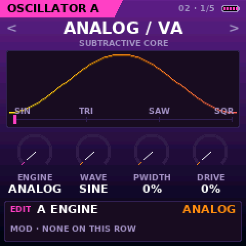
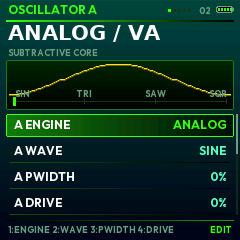
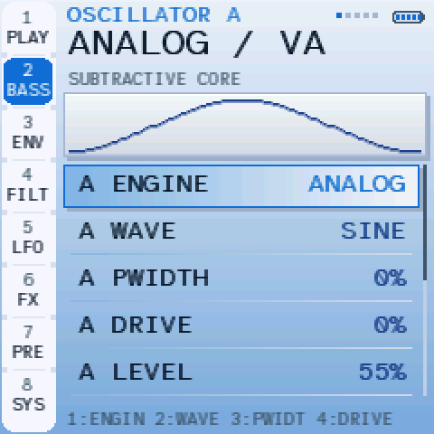

Le manuel de K-WASUB
Un synthé de basses modernes pour le M-VAVE FM-1. Les 27 touches jouent, K1–K4 règlent ce que montre l’écran (écrit en bas), les boutons ouvrent les pages. Court exprès : ce qui se voit à l’écran n’est pas réexpliqué.

- 4 ou 8 moteurs, deux oscillateurs, un sub, un oscillateur sample / resample
- LFO learn : LFO maintenu, tourner un potard
- FX PADS avec quantisation, PERFORM, MORPH X/Y et A/B
- SEQ BASS, ARP, MIDI
- Un grave profond et propre : OTT, MONO BASS, SUB LOCK, auto level
- 7 thèmes, 26 palettes, 9 polices
Et d’autres choses arrivent. Dis-moi ce qui t’aiderait le plus ; un don, même petit, aide énormément.
1 · Démarrer
- Installer : installer.html dans Chrome ou Edge, FM-1 branché avec un câble USB de données. Sinon : les scripts
INSTALL-*(Python 3). - Premier démarrage : CLASSIC (listes) ou SHIFT (3 colonnes) ? Demandé une fois. Ensuite l’image de départ attend n’importe quel bouton ou touche.
- Jouer : les touches ; PRESETS change de son tout de suite (SAVE maintenu = UNDO). Chaque session démarre à l’octave −1.
- AUTOSAVE garde le son en cours toutes les minutes ; il revient au démarrage suivant. SAVE le garde pour de bon dans un des 32 emplacements.
2 · Les boutons
| Appui | Maintien (une barre se remplit) | |
|---|---|---|
| HOME | PLAY, LIVE MIX | A + B : les deux oscillateurs |
| EDIT | OSC A, B, SUB, A + B, OSC C (sample, resample) | aléatoire de la page |
| ENV | enveloppes ampli, filtre, mod | + potard : l’enveloppe de mod dessus |
| SEQ | filtre, mod du filtre, SEQ BASS | aléatoire de la page |
| LFO | LFO 1 (wobble), LFO 2, STEP, matrice | + potard : LFO 2 dessus · avec OCT− : LFO 1 |
| FX | SAT, OTT, COMP, EQ, DELAY, VERB, CHORUS, PHASER, CRUSH, MASTER | FX PADS |
| ARP | presets A / B, SAVE, ARP | aléatoire de la page |
| GLO | SYSTEM, MIDI | CLASSIC ↔ SHIFT |
| SEL | PERFORM → MORPH X/Y → FX LIVE → MACROS → MORPH A/B | écouter le son enregistré (comparer) |
| SAVE | enregistrer | + OCT− UNDO / OCT+ REDO (16 pas) ; sur les presets : favori |
| PLAY | SEQ marche / arrêt | HOLD : les touches restent tenues |
| REC | tap tempo · sur SEQ : enregistrement des pas | PANIC |
| OCT− OCT+ | octave | UNDO / REDO · avec un potard : SHIFT |
Rappuyer sur un bouton de page montre sa vue suivante. SELECT une ligne, ALGO sa valeur. KNOB ACCEL (SYSTEM) : OFF, ON, FAST, ULTRA.
3 · Les pages


- EQ : SELECT une bande ; K1 FREQ, K2 GAIN, K3 Q, K4 SHAPE.
- RESAMPLE (OSC C) : enregistre 2 à 4 s de la sortie, OSC C la rejoue (boucle, vitesse, touches). Gardé jusqu’à l’extinction.
- Presque tout peut être une destination (LFO, matrice, assignation rapide), y compris MORPH X / Y / A-B et A/B MIX.
4 · SEL : les fenêtres de jeu


Dans PERFORM, OCT+ maintenu transforme les touches en FX PADS. Un bouton de page ferme une fenêtre.
5 · FX PADS (FX maintenu)

| Blanches 1–8 | vitesse du wobble |
| Blanches 9–16 | profondeur, forme du wobble |
| Noires 1–4 | stutter (tenu) |
| Noires 5–11 | tape stop, filtres DJ, pump, saturation, phaser, crush |
K1 CUTOFF · K2 RÉSONANCE · K3 TYPE DE FILTRE · K4 MORPH A/B · ALGO : QUANTISATION (OFF à 1/64) : une touche attend la prochaine division, elle tombe en rythme.
6 · Thèmes, palettes, polices
SYSTEM › THEME, PALETTE (13, puis leurs versions dégradé RAD), FONT (9), LOUPE, BRIGHTNESS. Deux modes : CLASSIC (listes) et SHIFT (3 colonnes, OCT− / OCT+ maintenus pour celles du milieu et de droite).





7 · Le son
- Moteurs : ANALOG, SUPER / REESE, WAVE, FM (ESSENTIAL) + PHASE, FOLD, SYNC, VOCAL (SYSTEM › ENGINES › ALL). A et B : addition, ring, X-mod, sync.
- Filtre : LP 24, LP 12, BAND, HIGH, NOTCH, VOWEL, COMB.
- Grave : MONO BASS (mono sous 120 Hz), SUB LOCK (sub en phase avec OSC A), DEEP BASS (+4 / +7 dB sous 90 Hz), OTT.
- Sortie : AUTO LEVEL (même volume pour tous les sons), limiteur toujours actif, volume MASTER en dernier.
- Presets : 51 sons d’usine (avec tags : SUB, REESE, GROWL, WOBBLE, PLUCK, 808, DRONE), 32 à toi.
- SEQ BASS : 16 × 16 pas, REC écrit depuis les touches. ARP : 5 modes. MIDI : learn, horloge in / out, program change.
8 · Page Données (USB)
Données (Chrome / Edge) : sauvegarder et recharger tes sons (.kwsub), enregistrer un RESAMPLE en WAV, envoyer un fichier son à toi vers OSC C (jusqu’à l’extinction).
9 · Aide
LAST STOP) : WATCHDOG = surchargé, LOW VOLTAGE = alimentation (batterie, câble), CRASH + adresse = envoie-la-moi. Pas de son ? SYSTEM › AUDIO CORES = SINGLE, vérifie MASTER. Notes bloquées ? REC maintenu (PANIC). Secours : OCT− maintenu à l’allumage, l’installateur marche toujours.